Styling vertical Chinese, Japanese, Korean and Mongolian text (draft!)
HTML authors (using editors or scripting), script developers (PHP, JSP, etc.), and anyone who is new to internationalization and needs guidance on how to use <b> and <i> tags in HTML.
This article explains how to use CSS to produce vertical text for languages such as Chinese, Japanese, Korean, and Mongolian. The CSS specification contains a lot of implementation-specific information. This article draws out the basic information that content authors need to create the more common features of vertical text. It also compares the theory and practice about what is possible.
While reading this article check out the user-controlled test pages, which allow you to test how your browser behaves.
NOTE!This is a draft of the article and should not be considered authoritative or anywhere near complete. It will be updated regularly and may be significantly changed.
Each section explains how you would markup up your content according to the CSS spec (which is usually simple and straightforward), but then looks at what you currently have to do to achieve the same result in browsers that don't implement the standard property and value names.
Currently, Microsoft Edge and Firefox (v41+) support many features of vertical text per the CSS standard (though with some gaps for form controls in Edge).
Internet Explorer, Chrome, Safari, and Opera also support vertical text to some degree. However, for this to work, the CSS code typically uses prefixed property names as well as the standard property name, and for Internet Explorer you will need to use deprecated values for writing-mode.
implementation notes: After explaining how to achieve the result you want using CSS, as described in the editor's draft of Writing Modes Level 3 CSS module, you'll find boxes like this that explain some of the associated caveats and issues, as well as identifying which features that are not supported by one browser or another.
The issues described are current as of the date of publication of this article. We will try to update the article as issues are resolved.
Where it is supported, most of what you need should be achievable by applying the writing-mode property to the content that you want to be set vertically.
In Japanese, Chinese and Korean, lines start at the right side of the figure box and progress to the left. Latin script text typically runs down the page, with the letters rotated clockwise, while the Han characters remain upright. Any graphic also remains upright.
To produce the Japanese example below we would use the following CSS on the figure element:
figure:lang(ja) {
writing-mode: vertical-rl;
}
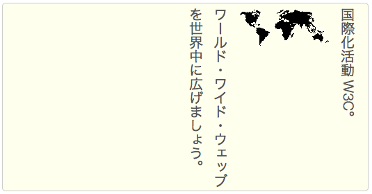
implementation notes: Chrome, Safari and Opera: you currently need to use the proprietary -webkit-writing-mode property.
Internet Explorer: requires -ms-writing-mode, but in addition requires the deprecated value rl-tb. That value can be used with the unprefixed writing-mode property in IE, but -ms-writing-mode was introduced in mid 2014 to improve the behaviour of nested properties in IE.
Opera: fails to display inline text running along the line, and all Mongolian text.
In Mongolian the lines start at the left side of the figure box and progress to the right. The Latin script text still runs down the page, with the letters rotated clockwise, and the Mongolian characters display as expected.
For Mongolian, use:
figure {
writing-mode: vertical-lr;
}
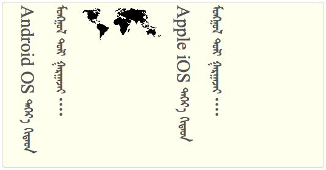
implementation notes:Safari doesn't correctly display the Mongolian text. Glyphs are rotated anti-clockwise away from the correct orientation, and don't join.
Chrome also fails to join the Mongolian characters when using some fonts, although they are correctly oriented.
If you embed a right-to-left script in the text, such as Arabic or Hebrew, it will run from bottom to top along the line, and the top of the letters will be to the right. This is analogous to what happens in horizontal text.
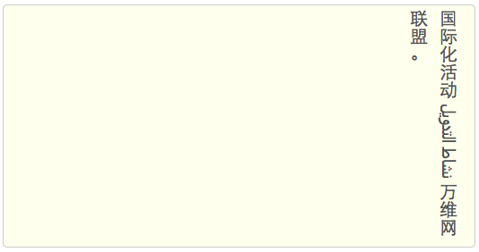
implementation notes:Although Chrome displays Arabic script text perfectly well in horizontal mode, letters are no longer joined up in vertical mode. Safari does not have this problem. Chrome also fails to combine glyphs in Hindi conjuncts.
In Internet Explorer, the addition of the dir attribute in vertical text causes the space where the text should appear to go blank.
In addition to horizontal-tb, which is the normal setting for horizontal text, there are two additional property values for writing-mode, and these produce vertical text.
The value sideways-rl makes all characters to which it is applied lie on their right side, including Han characters. The text runs from top to bottom, and lines progress from right to left.
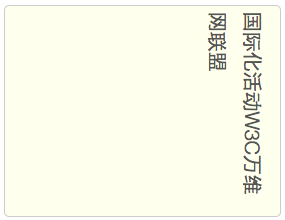
The sideways-lr value makes all characters lie on their left side, and the text starts at the bottom of the line and lines progress from left to right.
These values are particularly useful for rotating text that is normally horizontal, for example alongside an image or in a table header.
implementation notes:Neither of these values is currently supported in browsers.
It is common to show embedded Latin letters standing upright, rather than running down the page, particularly for initialisms.
One way to achieve this is to use fullwidth characters, such as Ｗ３Ｃ. These will automatically be displayed upright. Of course, this only works for Latin script text that doesn't include accents.
Are fullwidth Latin characters needed for Mongolian? Is it common to have upright characters in Mongolian?
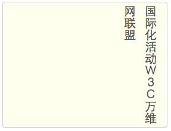
If you want to restyle existing characters that are not fullwidth so that they stand upright, use markup such as span or abbrev to identify the relevant text, and apply a CSS property. In the Chinese example below, we put the Latin text in a span with a class name upright.
When it comes to styling the marked up text, one alternative would be to transform the text into fullwidth characters. Fullwidth characters are displayed upright by default.
.upright {
text-transform: full-width;
}
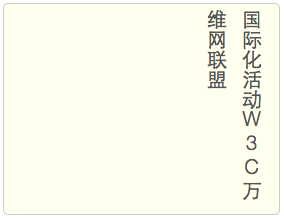
This is appropriate for initialisms, but is not necessarily useful for all types of upright text, and note again that this technique only works for Latin characters, but not those that have accents!
implementation notes:text-transform: full-width currently only works in Firefox.
Text in other scripts will not have full-width equivalents, and so will need to use the next approach.
Another alternative is to apply the text-orientation property. This option doesn't convert any characters to fullwidth.
.upright {
text-orientation: upright;
}
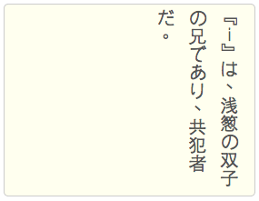
implementation notes:Chrome, Safari, and Opera use the proprietary -webkit-text-orientation property.
There doesn't seem to be a simple way to achieve this in Internet Explorer.
If the Latin text contains accents or diacritics as separate characters alongside their base character, you should not see the combining characters on separate lines.
For non-Latin scripts you will need to use the text-orientation property to make the text stand upright.
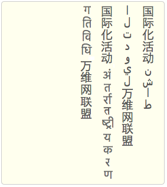
However, there are some scripts that present additional issues, although it should be said that these non-Latin scripts don't seem to be set upright often.
Embedded Arabic script text (shown in the two right-most lines above) is usually joined up. It is not possible to join Arabic characters when they are displayed upright, so isolated forms should be used. Furthermore, the order of characters is top to bottom, when written upright, whereas Arabic text that is rotated clockwise is read from bottom to top (because it is right-to-left).
implementation notes:Safari uses joining forms, rather than isolated forms, for upright Arabic script text. It also incorrectly orders the glyphs from bottom to top.
Chrome orders Arabic words top-to-bottom, but the letters making up each word are ordered bottom-to-top.
Some complex scripts, such as Devanagari (used for Hindi, and shown in the two left-most lines above) require upright text to be split at syllable boundaries. In some cases these syllables are more complicated that those covered by the Unicode concept of 'grapheme cluster'. Such syllables are currently not handled well by browsers in upright text runs.
implementation notes:None of the browsers that support upright orientation of characters do well with Hindi. Many, if not all, combining characters appear on separate lines. Safari does combine some consonant clusters, but still has problems with spacing combining characters. In Firefox and Chrome the indic script text also has large gaps between characters and runs outside the box it is displayed in.
CSS provides one more value of the text-orientation property.
When used with writing-mode: vertical-lr/rl the value sideways makes all characters to which it is applied lie on their right side, including Han characters.
This value only works with the values of writing-mode that begin with vertical-.
It is more likely that you will use the sideways-rl and sideways-lr values of writing-mode to achieve this kind of effect (see above), since it is equivalent to a simple rotation of horizontal text.
implementation notes:No browser currently supports the sideways value for text-orientation.
It is common for short numbers of 2-3 digits (sometimes 4) and occasionally other runs of text, to run horizontal within the vertical flow. In Japanese this is called tate chū yoko.
The easiest approach to apply this to numeric digits is to use text-combine-upright with a digits x value.
implementation notes:In Internet Explorer this property is called -ms-text-combine-horizontal.
Firefox, Chrome and Safari do not yet support this property.
It only works for digits in the ASCII range, and full-width Unicode codepoints are automatically converted to ASCII codepoints during the process. It doesn't work for other numbering systems, such as Arabic, Bengali, etc.
The example below uses the following CSS
time {
text-combine-upright: digits 2;
}
This makes any double-digit numbers in the text run horizontally, but doesn't affect anything else. (If you only want 2-digit numbers to run horizontally, you can just use the shortcut value, ie. digits without a following number.)
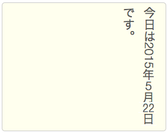
To fit longer numbers horizontally, change the number after digits. In the above example the 2013 will not be horizontal. You could make it horizontal using text-combine-upright: digits 4. Then any numeric sequence up to four digits long will be horizontal. Four is the maximum number of digits you can layout horizontally in vertical text using this style.
If you'd like the unaffected numbers to be full-width, you can use the following styling. Full-width characters are displayed upright by default.
time {
text-combine-upright: digits 2;
text-transform: full-width;
}
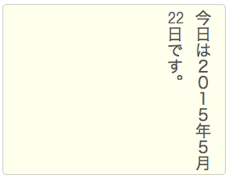
Use dedicated markup where necessary. For example, for dates and times, you could just apply the style to the time element.
You can set this style on block elements such as p or section and the style will only be applied to runs of numbers. Be aware, however, that you may need to correct the behavior if you set text-combine-horizontal for a whole paragraph or more if that content contains numbers like 10,000, since the comma interrupts the sequence of digits; the result will be 10 set horizontally, and ,000 set running down the page.
If you want to apply horizontal layout to non-digit text, you have to use text-combine-upright: all; and surround the text you want to be horizontal with markup. You can still use the digits value for the numbers, but you'll need to use all for the other stuff.
Note how we used two spans, in order to clearly indicate the boundaries of the horizontal text.
The browser will try to squeeze the horizontal text into the width of a single character, so don't be too ambitious about how many characters you do this to. It is likely to be hard to read if you have more than three characters side-by-side.
Suppose you applied the digit styling to a whole section, and there's a number 10,000 in that section that you don't want to be affected. Use markup to apply the none value to that bit.
The browser will try to use special narrow variants of the horizontal characters if they are included in the font being used (eg. OpenType's hwid and twid). After trying that, it will compress the glyphs to fit them in the space available. The former approach will produce a much nicer result, especially at larger sizes. Therefore, it's worth using a font that has those extra glyphs (many do).
Text entry forms and select menus should flow down the page in vertical text, as illustrated in the following diagram.
implementation notes:Only Firefox rotates the direction of the form fields for input with type of text, textarea, and select, however, select opens the alternatives horizontally at the bottom of the currently displayed option, and the other form fields can drop out of the bottom of the vertical block that contains them unless you specify the height.
Chrome and Safari and Internet Explorer place the form field horizontally and display the contained text horizontally also.
In vertical content areas, table rows should be ordered in the same direction as lines, ie. down the page, the rows should progress in the same direction as lines follow each other, and the text inside cells should also be vertical by default.
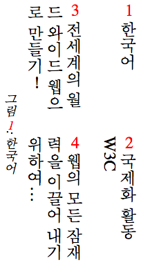
The numbering of the illustration above counts cells in a row first, then moves to the next row. As you can see, the columns are now horizontal.
implementation notes:Firefox, Chrome and Safari and Internet Explorer all behave as expected.
The picture above shows a caption after the table. The placement of captions can be set using the caption-side property. CSS3 provides two new values for this property: block-start (which would position the caption vertically to the left above), and block-end (which would position the caption as shown). These logical values allow the position of the caption to change appropriately as the direction of the text changes.
implementation notes:Chrome and Safari and Internet Explorer all display the caption as vertical text on the left by default. Firefox displays the caption horizontally, above the table.
None of the browsers above recognize the block-start and block-end values.
implementation notes:There are some other issues to consider for table display.
If you place the writing-mode property on an individual table cell, you would expect the text in that cell to be displayed vertically. Similarly, if you apply the writing-mode property to a span within a table cell, you would expect the text in that span to be displayed vertically.
This works as expected in Internet Explorer and Firefox. Chrome and Safari, on the other hand, rotate the characters to the left when -webkit-writing-direction is set on the td element, but display them horizontally. You also have to set the height of the cell in these browsers for a span to be displayed vertically.